| Integration with Spark / Install Spark |
SequoiaDB Administration Centeris a visualization management tool available for SequoiaDB Community and Enterprise Editions. SequoiaDB Administration Center gives you the power to deploy, manage, develop, and monitor SequoiaDBdatabase server cluster. With web-based graphical user interface, SequoiaDB Administration Center helps you overcome your SequoiaDB and Spark cluster performance concerns and management overhead.
In SequoiaDB Community Edition, the Administration Center is able to help users to manage SequoiaDB database server cluster. In addition to all features included in the SequoiaDB Community Edition, the Administration Center can be also used to manage Apache Spark cluster in Enterprise Edition.
This section explains how to use SequoiaDB Administration Center to deploy and manage Apache Spark in SequoiaDB cluster.
Installing Apache Spark using Administration Center requires SequoiaDB Enterprise Edition. For SequoiaDB Community Edition users, please refer “Install as standalone package” section in order to manually install and deploy your Spark cluster.
1) Login to Administration Center (password is “admin” by default)
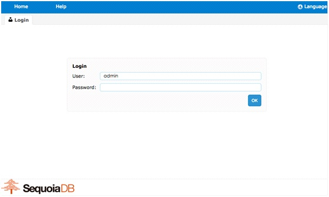
2) Create a new cluster
Click the drop-down list and select “Create Cluster” option.
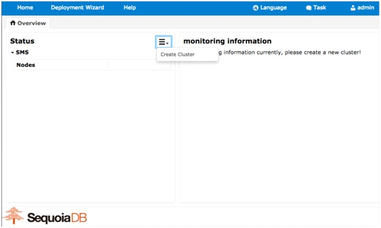
Fill in the fields and click OK to continue.
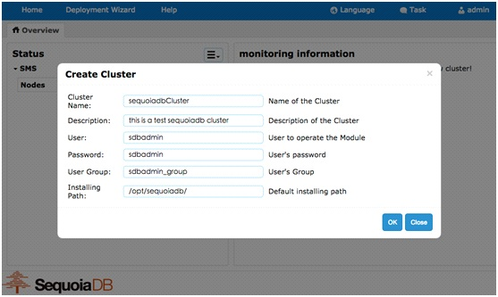
3) Add hosts into the cluster
Hosts must be added to cluster before creating any module. Beside of the cluster name that just created, there’s a drop-down list. Click the list and select “Add Host” option.
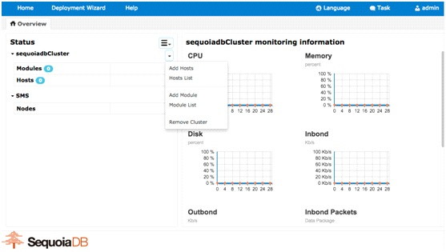
In the IP/HostName field, you can fill in all hosts that planed to be added to the cluster. You can input multiple hosts with one line each, or you can also do a range scan by providing an IP range.
Root user has to be used during installation, so you may have to enable root-login in Ubuntu Linux.
You have to fill in root password in Password field in order to continue.
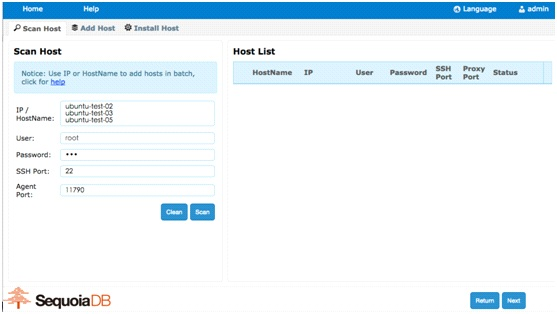
Clicking “Scan” button will lead Administration Center scan the hosts for sanity check. It will attempt to login as the root user, and check whether SSH service is up and running.
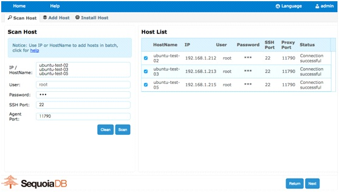
Keep clicking Next is going to install SequoiaDB Community or Enterprise Edition in the hosts you specified.
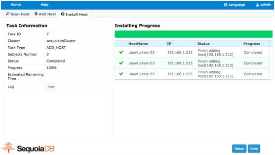
Note that the database service is NOT up and running yet. This step only deploy SequoiaDB installation image into the hosts. It will not start building database service until adding SequoiaDB module into the cluster.
4) Create a new module
Beside of the cluster name that just created, there’s a drop-down list. Click the list and select “Add Module” option.
Click the Module type list and select Apache Spark, fill in your favorite module name.
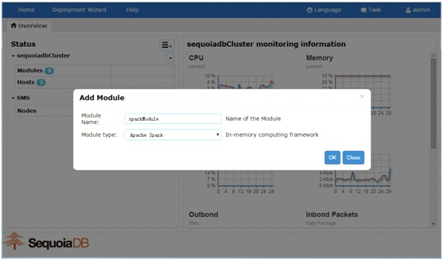
5) Select the hosts for the module
By default, SequoiaDB Administration Center is going to deploy Spark to all hosts in the cluster. You can select specific hosts by clicking “Select Host” button.
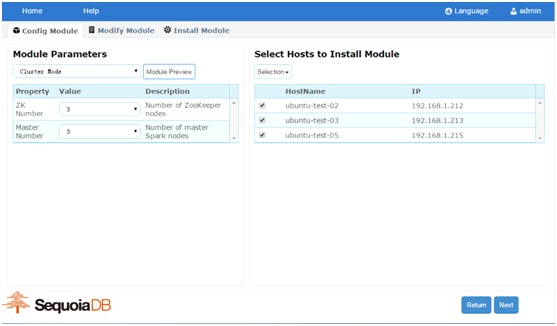
It is recommended to deploy Spark module on all hosts that SequoiaDB data node run.
6) Specify ZooKeeper configuration
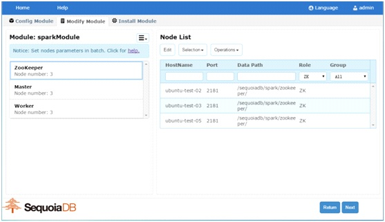
7) Specify Master nodes
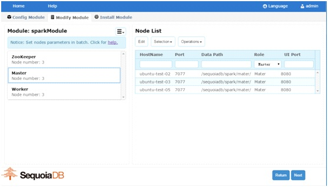
8) Specify Worker nodes
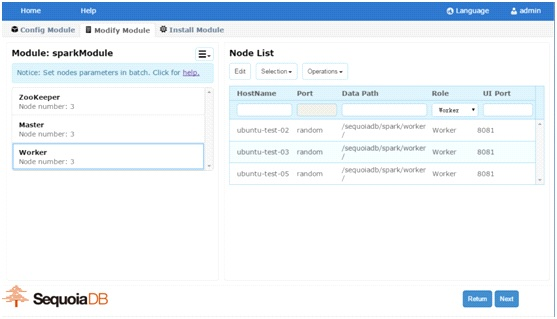
9) Monitor Apache Spark cluster
SequoiaDB Administration Center can be used to monitor Spark status.
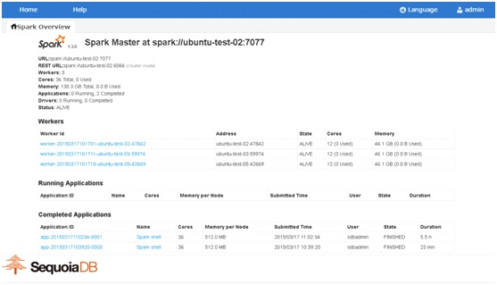